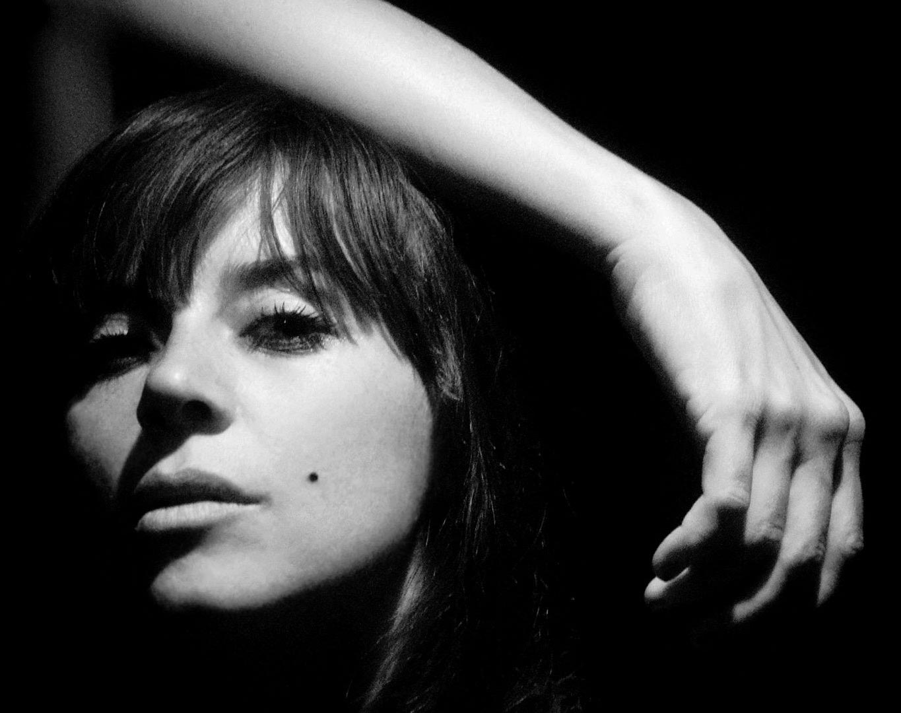
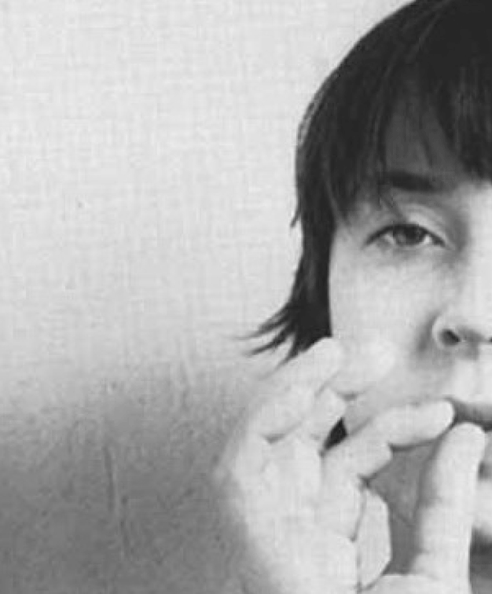
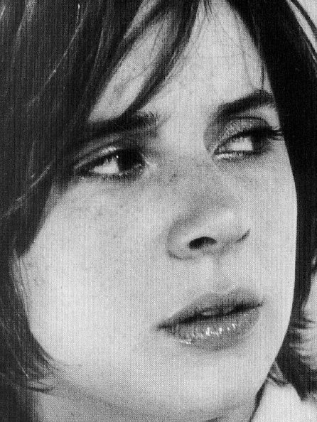
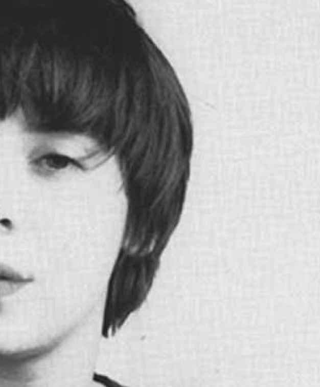

"Cathartic" is a word bandied about too loosely in regard to artists, but it suits Marshall perfectly.
Performing--especially solo, as she will for this Chicago debut--Marshall struggles with stage fright, but as
she
trudges through, eyes cast down, she squeezes out raw, striking beauty. I've seen Polly Jean Harvey, Scrawl's
Marcy Mays, and the Spinanes' Rebecca Gates mentioned as reference points for Marshall's singing, but while she
shares traits with all three, her unaffected primitivism, the way she avoids polishing her emotions, is all her
own. Seeing her perform could be hard work and it might not be that fun, but it's bound to be riveting.
